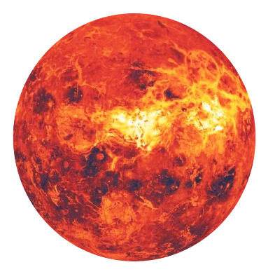

Венера является второй планетой от Солнца, ближайшей планетой к Земле и третьим по яркости объектом на небосклоне после Солнца и Луны.
Иногда эту планету называют сестрой Земли, что связано с определенной схожестью по массе и размерам.
Поверхность Венеры покрыта полностью непроницаемым слоем облаков, основным компонентом которых является серная кислота.
Называние Венера планета получила в честь римской богини любви и красоты.
Еще во времена древних римлян люди уже знали, что эта Венера является одной из четырех, отличающихся от Земли планет.
Именно самая высокий показатель яркости планет, заметность Венеры, сыграли свою роль в том, что она была названа в честь богини любви, что позволило годами ассоциировать планету с любовью, женственностью и романтикой.
Долгое время считалось, что Венера и Земля — это планеты близнецы.
Причиной тому было их сходство по размерам, плотности, массе и объему.
Однако позже ученые выяснили, что не смотря на очевидную схожесть данных планетарных характеристик, планеты очень сильно отличаются друг от друга.
Речь идет о таких параметрах как атмосфера, вращение, температура поверхности и наличие спутников (у Венеры их нет).
Возврат на главную страницу